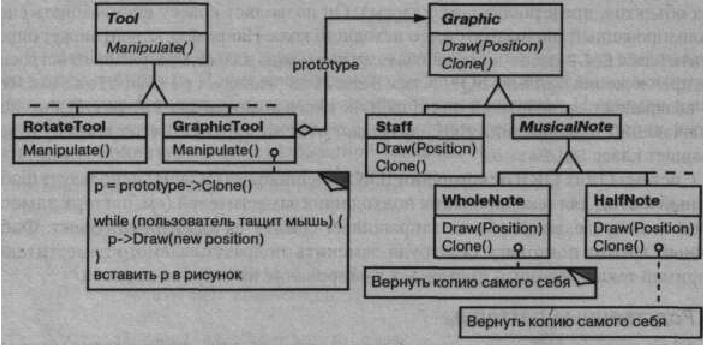
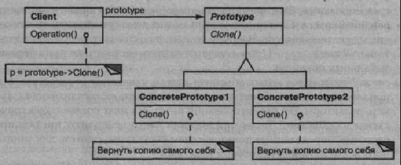

Паттерн Prototype
Название и классификация паттерна
Прототип - паттерн, порождающий объекты.
Назначение
Задает виды создаваемых объектов с помощью экземпляра-прототипа и создает новые объекты путем копирования этого прототипа.
Мотивация
Построить музыкальный редактор удалось бы путем адаптации общего каркаса графических редакторов и добавления новых объектов, представляющих ноты, паузы и нотный стан. В каркасе редактора может присутствовать палитра инструментов для добавления в партитуру этих музыкальных объектов. Палитра может также содержать инструменты для выбора, перемещения и иных манипуляций с объектами. Так, пользователь, щелкнув, например, по значку четверти поместил бы ее тем самым в партитуру. Или, применив инструмент перемещения, : двигал бы ноту на стане вверх или вниз, чтобы изменить ее высоту.
Предположим, что каркас предоставляет абстрактный класс Graphic для графических компонентов вроде нот и нотных станов, а также абстрактный класс Tool для определения инструментов в палитре. Кроме того, в каркасе имеется предопределенный подкласс GraphicTool для инструментов, которые создают графические объекты и добавляют их в документ.
Однако класс GraphicTool создает некую проблему для проектировщика каркаса. Классы нот и нотных станов специфичны для нашего приложения, а класс GraphicTool принадлежит каркасу. Этому классу ничего неизвестно о том, как создавать экземпляры наших музыкальных классов и добавлять их в партитуру. Можно было бы породить от GraphicTool подклассы для каждого вида музыкальных объектов, но тогда оказалось бы слишком много классов, отличающихся только тем, какой музыкальный объект они инстанцируют. Мы знаем, что гибкой альтернативой порождению подклассов является композиция. Вопрос в том, как каркас мог бы воспользоваться ею для параметризации экземпляров GraphicTool классом того объекта Graphic, который предполагается создать.
Решение - заставить GraphicTool создавать новый графический объект, копируя или «клонируя» экземпляр подкласса класса Graphic. Этот экземпляр мы будем называть прототипом. GraphicTool параметризуется прототипом, который он должен клонировать и добавить в документ. Если все подклассы Graphic поддерживают операцию Clone, то GraphicTool может клонировать любой вид графических объектов.
Итак, в нашем музыкальном редакторе каждый инструмент для создания музыкального объекта - это экземпляр класса GraphicTool, инициализированный тем или иным прототипом. Любой экземпляр GraphicTool будет создавать музыкальный объект, клонируя его прототип и добавляя клон в партитуру.
Можно воспользоваться паттерном прототип, чтобы еще больше сократить число классов. Для целых и половинных нот у нас есть отдельные классы, но, быть может, это излишне. Вместо этого они могли бы быть экземплярами одного и того же класса, инициализированного разными растровыми изображениями и длительностями звучания. Инструмент для создания целых нот становится просто объектом класса GraphicTool, в котором прототип MusicalNote инициализирован целой нотой. Это может значительно уменьшить число классов в системе. Заодно упрощается добавление нового вида нот в музыкальный редактор.
Применимость
Используйте паттерн прототип, когда система не должна зависеть от того, как в ней создаются, компонуются и представляются продукты:
- инстанцируемые классы определяются во время выполнения, например с помощью динамической загрузки;
- для того чтобы избежать построения иерархий классов или фабрик, параллельных иерархии классов продуктов;
- а экземпляры класса могут находиться в одном из не очень большого числа различных состояний. Может оказаться удобнее установить соответствующее число прототипов и клонировать их, а не инстанцировать каждый раз класс вручную в подходящем состоянии.
Структура
Участники
- Prototype (Graphic) - прототип:
- - объявляет интерфейс для клонирования самого себя;
- ConcretePrototype (Staff- нотный стан, WholeNote - целая нота, HalfNote - половинная нота) - конкретный прототип:
- - реализует операцию клонирования себя;
- Client (GraphicTool) - клиент:
- - создает новый объект, обращаясь к прототипу с запросом клонировать себя.
Отношения
Клиент обращается к прототипу, чтобы тот создал свою копию.
Результаты
У прототипа те же самые результаты, что у абстрактной фабрики и строителя: он скрывает от клиента конкретные классы продуктов, уменьшая тем самым число известных клиенту имен. Кроме того, все эти паттерны позволяют клиентам работать со специфичными для приложения классами без модификаций.
Ниже перечислены дополнительные преимущества паттерна прототип:
- добавление и удаление продуктов во время выполнения. Прототип позволяет включать новый конкретный класс продуктов в систему, просто сообщив клиенту о новом экземпляре-прототипе. Это несколько более гибкое решение по сравнению с тем, что удастся сделать с помощью других порождающих паттернов, ибо клиент может устанавливать и удалять прототипы во время выполнения;
- спецификация новых объектов путем изменения значений. Динамичные системы позволяют определять поведение за счет композиции объектов - например,
путем задания значений переменных объекта, - а не с помощью определения новых классов. По сути дела, вы определяете новые виды объектов, инстанцируя
уже существующие классы и регистрируя их-экземпляры как прототипы клиентских объектов. Клиент может изменить поведение, делегируя свои обязанности прототипу.
Такой дизайн позволяет пользователям определять новые классы без программирования. Фактически клонирование объекта аналогично инстанцированию класса. Паттерн прототип может резко уменьшить число необходимых системе классов. В нашем музыкальном редакторе с помощью одного только класса GraphicTool удастся создать бесконечное разнообразие музыкальных объектов;
- специфицирование новых объектов путем изменения структуры. Многие приложения строят объекты из крупных и мелких составляющих.
Например, редакторы для проектирования печатных плат создают электрические схемы из подсхем.1 Такие приложения часто позволяют инстанцировать сложные, определенные пользователем структуры, скажем, для многократного использования некоторой подсхемы.
Паттерн прототип поддерживает и такую возможность. Мы просто добавляем подсхему как прототип в палитру доступных элементов схемы. При условии, что объект, представляющий составную схему, реализует операцию Clone как глубокое копирование, схемы с разными структурами могут выступать в качестве прототипов;
- уменьшение числа подклассов. Паттерн фабричный метод часто порождает иерархию классов Creator, параллельную иерархии классов продуктов. Прототип позволяет клонировать прототип, а не запрашивать фабричный метод создать новый объект. Поэтому иерархия класса Creator становится вообще ненужной. Это преимущество касается главным образом языков типа C++, где классы не рассматриваются как настоящие объекты. В языках же типа Smalltalk и Objective С это не так существенно, поскольку всегда можно использовать объект-класс в качестве создателя. В таких языках объекты- классы уже выступают как прототипы;
- динамическое конфигурирование приложения классами. Некоторые среды позволяют динамически загружать классы в приложение во время его выполнения. Паттерн прототип -
это ключ к применению таких возможностей в языке типа C++.Для таких приложений характерны паттерны компоновщик и декоратор.
Приложение, которое создает экземпляры динамически загружаемого класса, не может обращаться к его конструктору статически. Вместо этого исполняющая среда автоматически создает экземпляр каждого класса в момент его загрузки и регистрирует экземпляр в диспетчере прототипов (см. раздел «Реализация»). Затем приложение может запросить у диспетчера прототипов экземпляры вновь загруженных классов, которые изначально не были связаны с программой. Каркас приложений ЕТ++ [WGM88] в своей исполняющей среде использует именно такую схему.
Основной недостаток паттерна прототип заключается в том, что каждый под- •пасс класса Prototype должен реализовывать операцию Clone, а это далеко не всегда просто. Например, сложно добавить операцию Clone, когда рассматрива- тмые классы уже существуют. Проблемы возникают и в случае, если во внутреннем представлении объекта есть другие объекты или наличествуют круговые ссылки.
Реализация
Прототип особенно полезен в статически типизированных языках вроде C++, где классы не являются объектами, а во время выполнения информации о типе достаточно или нет вовсе. Меньший интерес данный паттерн представляет для "аких языков, как Smalltalk или Objective С, в которых и так уже есть нечто эквивалентное прототипу (именно - объект-класс) для создания экземпляров каждо- ::» класса. В языки, основанные на прототипах, например Self [US87], где создание любого объекта выполняется путем клонирования прототипа, этот паттерн просто встроен.
Рассмотрим основные вопросы, возникающие при реализации прототипов:
- использование диспетчера прототипов. Если число прототипов в системе не фиксировано (то есть они могут создаваться и уничтожаться динамически),
ведите реестр доступных прототипов. Клиенты должны не управлять прототипами самостоятельно, а сохранять и извлекать их из реестра. Клиент запрашивает
прототип из реестра перед его клонированием. Такой реестр мы будем называть диспетчером прототипов.
Диспетчер прототипов - это ассоциативное хранилище, которое возвращает прототип, соответствующий заданному ключу. В нем есть операции для регистрации прототипа с указанным ключом и отмены регистрации. Клиенты могут изменять и даже «просматривать» реестр во время выполнения, а значит, расширять систему и вести контроль над ее состоянием без написания кода;
- реализация операции Clone. Самая трудная часть паттерна прототип - правильная реализация операции Clone. Особенно сложно это в случае, когда в структуре
объекта есть круговые ссылки.
В большинстве языков имеется некоторая поддержка для клонирования объектов. Например, Smalltalk предоставляет реализацию копирования, которую все подклассы наследуют от класса Object. В C++ есть копирующий конструктор. Но эти средства не решают проблему «глубокого и поверхностного копирования» [GR83]. Суть ее в следующем: должны ли при клонировании объекта клонироваться также и его переменные экземпляра или клон просто разделяет с оригиналом эти переменные?
Поверхностное копирование просто, и часто его бывает достаточно. Именно такую возможность и предоставляет по умолчанию Smalltalk. В C++ копирующий конструктор по умолчанию выполняет почленное копирование, . то есть указатели разделяются копией и оригиналом. Но для клонирования прототипов со сложной структурой обычно необходимо глубокое копиро¬вание, поскольку клон должен быть независим от оригинала. Поэтому нужно гарантировать, что компоненты клона являются клонами компонентов прототипа. При клонировании вам приходится решать, что именно может разделяться и может ли вообще.
Если объекты в системе предоставляют операции Save (сохранить) и Load (загрузить), то разрешается воспользоваться ими для реализации операции Clone по умолчанию, просто сохранив и сразу же загрузив объект. Операция Save сохраняет объект в буфере памяти, a Load создает дубликат, реконструируя объект из буфера;
- инициализация клонов. Хотя некоторым клиентам вполне достаточно клона как такового, другим нужно инициализировать его внутреннее состояние полностью или
частично. Обычно передать начальные значения операции Clone невозможно, поскольку их число различно для разных классов прототипов. Для некоторых прототипов
нужно много параметров инициализации, другие вообще ничего не требуют. Передача Clone параметров мешает построению единообразного интерфейса клонирования.
Может оказаться, что в ваших классах прототипов уже определяются операции для установки и очистки некоторых важных элементов состояния. Если так, то этими операциями можно воспользоваться сразу после клонирования. В противном случае, возможно, понадобится ввести операцию Initialize (см. раздел «Пример кода»), которая принимает начальные значения в качестве аргументов и соответственно устанавливает внутреннее состояние клона. Будьте осторожны, если операция Clone реализует глубокое копирование: копии может понадобиться удалять (явно или внутри Initialize) перед повторной инициализацией.
Пример кода
Мы определим подкласс MazePrototypeFactory класса MazeFactory. Этот подкласс будет инициализироваться прототипами объектов, которые ему предстоит создавать, поэтому нам не придется порождать подклассы только ради изменения классов создаваемых стен или комнат.
MazePrototypeFactory дополняет интерфейс MazeFactory конструктором, принимающим в качестве аргументов прототипы:
class MazePrototypeFactory : public MazeFactory {
public:
MazePrototypeFactory(Maze*, Wall*, Room*, Door*);
virtual Maze* MakeMaze() const;
virtual Room* MakeRoom(int) const;
virtual Wall* MakeWalK) const;
virtual Door* MakeDoor(Room*, Room*) const;
private:
Maze* _prototypeMaze;
Room* prototypeRoom;
Wall* _prototypeWall;
Door* _prototypeDoor;
};
Новый конструктор просто инициализирует свои прототипы:
MazePrototypeFactory::MazePrototypeFactory (
Maze* m, Wall* w, Room* r, Door* d
) {
_ prototypeMaze = m;
_prototypeWall = w;
_prototypeRoom = r;
prototypeDoor = d;
}
Функции-члены для создания стен, комнат и дверей похожи друг на друга: каждая клонирует, а затем инициализирует прототип. Вот определения функций ..'akeWall и MakeDoor:
Wall* MazePrototypeFactory::MakeWall () const {
return _prototypeWall->Clone();
}
Door* MazePrototypeFactory::MakeDoor (Room* rl, Room *r2) const {
Door* door = _prototypeDoor->Clone();
door->Initialize(rl, r2);
return door;
}
Мы можем применить MazePrototypeFactory для создания прототипичного или принимаемого по умолчанию лабиринта, просто инициализируя его прототипами базовых компонентов:
MazeGame game; MazePrototypeFactory simpleMazeFactory( new Maze, new Wall, new Room, new Door ); Maze* maze = game.CreateMaze(simpleMazeFactory);
Для изменения типа лабиринта инициализируем MazePrototypeFactory другим набором прототипов. Следующий вызов создает лабиринт с дверью типа BombedDoor и комнатой типа RoomWithABomb:
MazePrototypeFactory bombedMazeFactory( new Maze, new BombedWall, new RoomWithABomb, new Door );
Объект, который предполагается использовать в качестве прототипа, напри¬мер экземпляр класса Wall, должен поддерживать операцию Clone. Кроме того. у него должен быть копирующий конструктор для клонирования. Также может потребоваться операция для повторной инициализации внутреннего состояния. Мы добавим в класс Door операцию Initialize, чтобы дать клиентам возможность инициализировать комнаты клона.
Сравните следующее определение Door с приведенным на стр. 91:
class Door : public MapSite {
public:
Door () ;
Door(const Door&);
virtual void Initialize(Room*, Room*);
virtual Door* Clone() const;
virtual void Enter() ;
Room* OtherSideFrom(Room*) ; private:
Room* _rooml;
Room* _room2;
};
Door::Door (const Door& other) {
_rooml = other._rooml;
_room2 = other._room2;
}
void Door::Initialize (Room* rl, Room* r2) {
_rooml = rl;
_room2 = r2;
}
Door* Door::Clone () const {
return new Door(*this);
}
Подкласс BombedWall должен заместить операцию Clone и реализовать ее ответствующий копирующий конструктор:
class BombedWall : public Wall {
public:
BombedWall();
BombedWall(const BombedWallk);
virtual Wall* Clone() const;
bool HasBomb();
private:
bool _bomb;
};
BombedWall::BombedWall (const BombedWallk other) : Wall(other) {
_bomb = other._bomb;
}
Wall* BombedWall::Clone () const {
return new BombedWall(*this);
}
Операция BombedWall: : Clone возвращает Wall*, а ее реализация - указатель на новый экземпляр подкласса, то есть BombedWal 1 *. Мы определяем Clone в базовом классе именно таким образом, чтобы клиентам, клонирующим прототип, не надо было знать о его конкретных подклассах. Клиентам никогда не придется приводить значение, возвращаемое Clone, к нужному типу.
В Smalltalk разрешается использовать стандартный метод копирования, унаследованный от класса Object, для клонирования любого прототипа MapSite. Можно воспользоваться фабрикой MazeFactory для изготовления любых необходимых прототипов. Например, допустимо создать комнату по ее номеру #room. В классе MazeFactory есть словарь, сопоставляющий именам прототипы. Его метод make: выглядит так:
make: partName ^(partCatalog at: partName) copy
Имея подходящие методы для инициализации MazeFactory прототипами, можно было бы создать простой лабиринт с помощью следующего кода:
CreateMaze on: (MazeFactory new with: Door new named: #door; with: Wall new named: #wall; with: Room new named: #room; yourself)
где определение метода класса on: для CreateMaze имеет вид
on: aFactory | rooml room2 | rooml := (aFactory make: #room). location: 1@1. room2 := (aFactory make: #room) location: 2@1. door := (aFactory make: #door) from: rooml to: room2. rooml atSide:#north put: (aFactory make: #wall) atSide:#east put: door; atSide:#south put: (aFactory make: #wall) atSide:#west put: (aFactory make: #wall). room2 atSide:#north put: (aFactory make: #wall) atSide:#east put: (aFactory make: #wall); atSide:#south put: (aFactory make: #wall) atSide:#west put: door. ^А Maze new addRoom: rooml; addRoom: room2; yourself
Известные применения
Быть может, впервые паттерн прототип был использован в системе Sketchpad Ивана Сазерленда (Ivan Sutherland) [Sut63]. Первым широко известным применением этого паттерна в объектно-ориентированном языке была система Thing- Lab, в которой пользователи могли сформировать составной объект, а затем превратить его в прототип, поместив в библиотеку повторно используемых объектов [Вог81]. Адель Голдберг и Давид Робсон упоминают прототипы в качестве паттернов в работе [GR83], но Джеймс Коплиен [Сор92] рассматривает этот вопрос гораздо шире. Он описывает связанные с прототипом идиомы языка C++ и при¬водит много примеров и вариантов. Etgdb - это оболочка отладчиков на базе ЕТ++, где имеется интерфейс вида point-and-click (укажи и щелкни) для различных командных отладчиков. Для каждого из них есть свой подкласс DebuggerAdaptor. Например, GdbAdaptor настраивает etgdb на синтаксис команд GNU gdb, a SunDbxAdaptor - на отладчик dbx компании Sun. Набор подклассов DebuggerAdaptor не «зашит» в etgdb. Вместо этого он получает имя адаптера из переменной среды, ищет в глобальной таблице прототип с указанным именем, а затем его клонирует. Добавить к etgdb новые отладчики можно, связав ядро с подклассом DebuggerAdaptor, разработанным для этого отладчика.
Библиотека приемов взаимодействия в программе Mode Composer хранит прототипы объектов, поддерживающих различные способы интерактивных отношений [Sha90]. Любой созданный с помощью Mode Composer способ взаимодействия можно применить в качестве прототипа, если поместить его в библиотеку. Паттерн прототип позволяет программе поддерживать неограниченное число вариантов отношений.
Пример музыкального редактора, обсуждавшийся в начале этого раздела, основан на каркасе графических редакторов Unidraw [VL90].
Родственные паттерны
В некоторых отношениях прототип и абстрактная фабрика являются конкурентами. Но их используют и совместно. Абстрактная фабрика может хранить набор прототипов, которые клонируются и возвращают изготовленные объекты.
В тех проектах, где активно применяются паттерны компоновщик и декоратор, тоже можно извлечь пользу из прототипа.